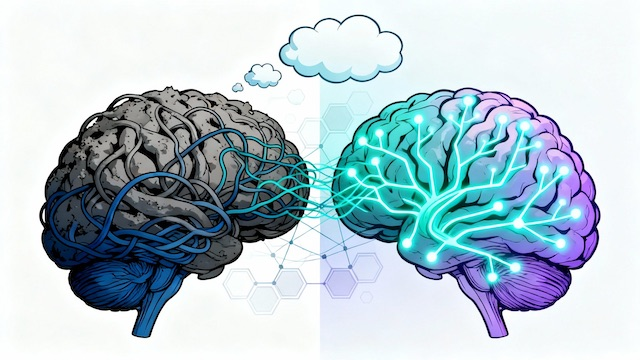

Transform negative thought patterns through evidence-based cognitive behavioral therapy—proven as effective as medication with dramatically lower relapse rates. Become your own cognitive scientist.
Platform Access
This course is included in the Digital Wellness Academy resilience platform for licensed practices.
Register for Access Practice Licensing InfoKey Research Finding
29% relapse rate vs 60% for medication alone after treatment
JAMA Psychiatry meta-analysis, 2014 (184 studies)
Cognitive Behavioral Therapy emerged in the 1960s through the groundbreaking work of psychiatrist Aaron T. Beck at the University of Pennsylvania. While conducting psychoanalytic research on depression, Beck made a revolutionary discovery: depressed patients exhibited systematic patterns of negative thoughts—"automatic thoughts"—that triggered and maintained their depressive symptoms. This fundamentally challenged prevailing psychiatric theory and launched the cognitive revolution in mental health treatment.
Simultaneously, psychologist Albert Ellis was developing Rational Emotive Behavior Therapy (REBT) based on similar principles. Together, Beck's Cognitive Therapy and Ellis's REBT established the theoretical foundation for what would become the most researched and validated mental health treatment approach in history. By the 1980s and 1990s, hundreds of randomized controlled trials demonstrated CBT's efficacy for depression, anxiety disorders, eating disorders, substance use disorders, insomnia, and chronic pain. The NIMH's landmark Treatment of Depression Collaborative Research Program (1989) found CBT equally effective as antidepressant medication—establishing it as a first-line treatment alongside pharmacotherapy.
The cognitive model proposes that psychological distress results not from situations themselves, but from how we interpret and think about those situations. The cognitive triangle—thoughts, feelings, and behaviors—illustrates that these three elements exist in continuous bidirectional feedback loops. In depression, this manifests as the "negative cognitive triad": negative thoughts about oneself, the world, and the future. These automatic negative thoughts trigger depressed mood and hopelessness, which lead to behavioral withdrawal, which then generates more negative thoughts, perpetuating the depressive cycle.
In anxiety disorders, the pattern involves catastrophic interpretations of threat triggering intense fear and panic, leading to avoidance behaviors that prevent learning that the feared catastrophe won't occur. The avoidance maintains anxiety by confirming the belief that the situation was too dangerous to face. CBT provides a systematic method for identifying these patterns, testing whether automatic thoughts are accurate or distorted, and developing more balanced alternatives through cognitive restructuring—treating thoughts as hypotheses to be tested rather than facts to be passively accepted.
Built on peer-reviewed research spanning six decades and hundreds of randomized controlled trials demonstrating CBT's efficacy for depression, anxiety, and other mental health conditions.
29% relapse rate with CBT vs 60% relapse rate with medication alone over 2 years
This definitive meta-analysis found no significant difference in acute treatment outcomes between CBT and antidepressants for major depressive disorder—but CBT demonstrated superior long-term outcomes. Patients responding to CBT had less than half the relapse rate of those treated with medication alone. CBT's "skills-based" nature creates lasting resilience against future episodes, while medication's benefits typically cease upon discontinuation.
The American Psychiatric Association, American Psychological Association, National Institute for Health and Care Excellence (UK), and World Health Organization all recommend CBT as a first-line treatment for major depressive disorder, generalized anxiety disorder, panic disorder, social anxiety disorder, OCD, and PTSD. Many guidelines now recommend CBT before or alongside medication due to superior long-term outcomes and absence of medication side effects.
CBT is based on the cognitive triangle: thoughts, feelings, and behaviors exist in continuous feedback loops. Automatic thoughts trigger emotional reactions which drive behavioral responses, reinforcing the original thoughts. CBT provides systematic techniques to identify automatic thoughts, recognize cognitive distortions (catastrophizing, black-and-white thinking, mind reading), examine evidence through cognitive restructuring, generate balanced alternatives, and conduct behavioral experiments. Neuroimaging studies show successful CBT produces measurable brain changes: decreased amygdala hyperactivity and increased prefrontal cortex activation—essentially teaching your brain new ways of processing emotional information that create lasting change.
Research consistently shows CBT is equally effective as antidepressants for mild-to-moderate depression and most anxiety disorders. The landmark NIMH study (1989) found CBT and antidepressants equally effective, including for severe depression. The critical advantage: CBT demonstrates significantly lower relapse rates—29% over two years compared to 60% for medication alone (JAMA Psychiatry 2014 meta-analysis of 184 studies). CBT teaches lasting skills you continue using after treatment ends. For moderate-to-severe symptoms, combination therapy often works best. For treatment-resistant cases, adding CBT to medication more than doubles effectiveness.
Many people notice increased awareness of thought patterns within 2-4 weeks. Behavioral activation often produces mood improvements within 2-3 weeks for depression. Most CBT clinical trials show substantial symptom reduction by 8-12 weeks (12-16 therapy sessions), with 50-60% achieving clinically significant improvement by 12 weeks. Maximal benefits typically emerge after 12-20 weeks of consistent practice. The key factor affecting timeline is consistent practice—CBT is a skills-based treatment requiring regular application of techniques to produce lasting change.
Self-directed CBT can be highly effective, particularly for mild-to-moderate symptoms. Meta-analyses demonstrate guided self-help CBT produces clinically significant improvements with effect sizes of 0.5-0.7 (moderate to large). It works best for people with mild-to-moderate depression or anxiety, those who are self-motivated, individuals supplementing professional therapy, those in stable recovery for maintenance, and people on therapy waitlists who want to start building skills immediately. Seek professional support if you have severe symptoms, complex trauma, or don't see improvement after 8-10 weeks of consistent effort.
CBT has specialized protocols validated for each condition. For panic disorder: 70-80% achieve panic-free status, with 80% maintaining improvements at 2 years. For social anxiety: large effect sizes (0.86), 60-75% clinically significant improvement. For OCD: Exposure and Response Prevention (ERP) achieves 60-75% substantial symptom reduction and outperforms medication for most patients. For PTSD: Trauma-focused CBT and Cognitive Processing Therapy are first-line treatments with 50-60% no longer meeting PTSD criteria after treatment. For generalized anxiety: large effect sizes (0.75-0.90) with sustained multi-year improvements.
Approximately 30-40% don't achieve full remission with CBT alone. Common reasons: insufficient practice (CBT requires daily application—commit to 10-15 minutes minimum); too early to evaluate (need 8-12 weeks of genuine effort); severe depression impairing motivation (consider medication to create baseline improvement); complicating factors (untreated medical conditions, substance use, ongoing trauma); focus on surface thoughts without addressing core beliefs through schema work; neglecting behavioral components (behavioral activation and exposure are essential, not optional). The CoBalT trial showed adding CBT to medication for treatment-resistant depression more than doubled effectiveness—46% vs 22% response.
First lesson available now. Full curriculum accessible after registration on the platform.
If you are experiencing a mental health crisis, call or text 988 for immediate support. This course is educational — not a substitute for professional clinical care.
This course is part of the Digital Wellness Academy platform. Ask your psychiatric provider about getting access as part of your treatment plan.
Get Access →43 course pages indexed by Google and AI search. License the platform and own this discovery — with your branding, your provider portal, and RTM billing support.
See How It Works →